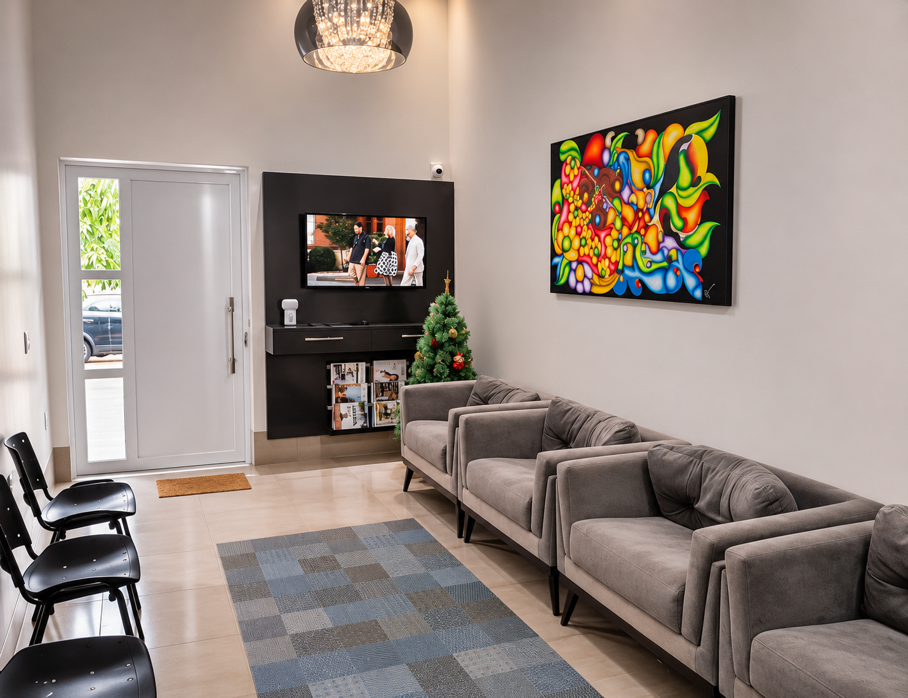
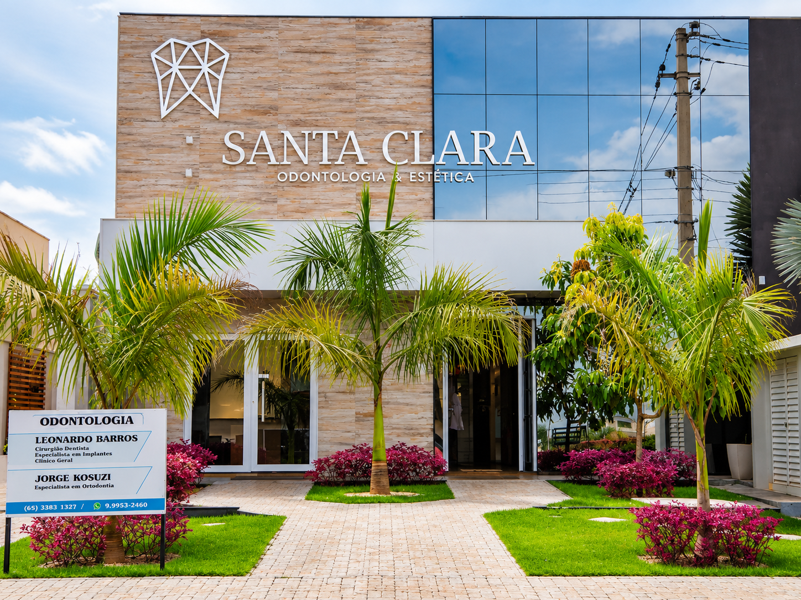

01 / ODONTOLOGIA
Saúde bucal
Atenção dedicada à saúde e ao cuidado do seu sorriso.
Odontologia e estética com experiência, atenção e um olhar dedicado a você.
Um espaço para cuidar de quem você é.

 UM AMBIENTE PENSADO PARA VOCÊ
UM AMBIENTE PENSADO PARA VOCÊ
Há mais de duas décadas, um compromisso com o seu bem-estar.
Na Santa Clara, em Sapezal, a experiência se encontra com um atendimento próximo, humano e cuidadoso.
Conheça quem cuida de você SAPEZAL, MT
SAPEZAL, MT
Cada pessoa merece um cuidado que respeite sua história.
Atenção dedicada à saúde e ao cuidado do seu sorriso.

Cuidados que valorizam o bem-estar e a individualidade.

Um ambiente preparado para receber você com tranquilidade.

Uma trajetória construída com atenção e confiança em Sapezal.
Registros de antes e depois disponibilizados pela clínica.
Arraste para explorar · Toque para ampliar Os resultados variam de pessoa para pessoa.

Dr. Leonardo Barros
Profissional de referência da Santa Clara, com uma atuação dedicada à odontologia, à atenção individualizada e ao bem-estar de seus pacientes.
Estamos em Sapezal, Mato Grosso. Será um prazer receber você.
Agendar pelo WhatsAppSegunda a sexta · 8h às 18h
Sábado · 8h às 12h